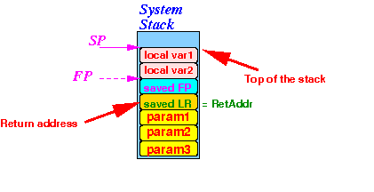
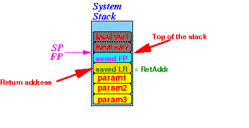
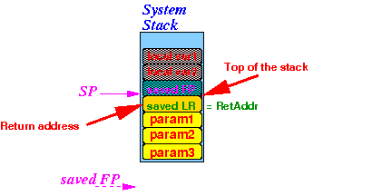

- Fact:
- As you know,
a computer is
as dumb as
a door nail ---
it will execute
an instruction
faithfully, even
if it will
crash a
program....
- You have learned that
you must use this
ARM instruction to
return from
a subroutine:
pop {pc}Here's the caveat:
- This instruction will only execute correctly if the top of the program stack contains the return address !!!
- As you know,
a computer is
as dumb as
a door nail ---
it will execute
an instruction
faithfully, even
if it will
crash a
program....
- Consider the
program stack that
contains a
stack frame structure:
 As you can see:
- The return address is not at the top of the program stack !!!!
So we must "tear down" the stack frame (carefully !!!) before we can return from a subroutine
Fortunately, the sequence of (assembler) instruction used is the same because the structure of the stack frame always has a specific structure
- The sequence of steps used to
tear down
a stack frame and
return to the caller is called:
- The postlude of a subroutine
- Steps in
the postlude:
- De-allocate the
space reserved for the
local variables
Instruction used:
mov sp, fpResult:

- Restore the
old value of FP back into the
FP register
Instruction used:
pop {fp}Result:
 The old FP is needed by the caller of this subroutine (the one that is gonna return)
Notice that:
- The return address is now at the top of the program stack !!!
- We can now return to
the caller !!!
Instruction used:
pop {pc}Notice that when this subroutine returns to its caller, the parameters are still in the stack:

-
Before the
postlude starts,
the
stack frame
looks like this:
- De-allocate the
space reserved for the
local variables
- Summary:
the steps of
the postlude is
always
mov sp, fp // De-allocate the local variables pop {fp} // Restore thd old FP register for the caller pop {pc} // return to the caller
- After
the called function
executes the
instruction used to return to its caller:
pop {pc}the program stack will contain the following:
I.e.:
- The program stack will still contain the parameters pushed by the calling function !!!
- Therefore:
- After a function
returns to
its caller:
- The caller must clean up the parameters that it has pushed on the stack !!!
That means that the sequence of instructions used by the caller function to pass parameters on the stack are as follows:
push parameters on stack bl callee-function clean up the parameters pushed on the stack !!!You can use this assembler instruction to clean up the parameters:
add sp, sp, #N // N = #bytes pushedUse N = 4 if you pushed 1 int parameter, use N = 4 if you pushed 2 int parameter, and so on.
- After a function
returns to
its caller: